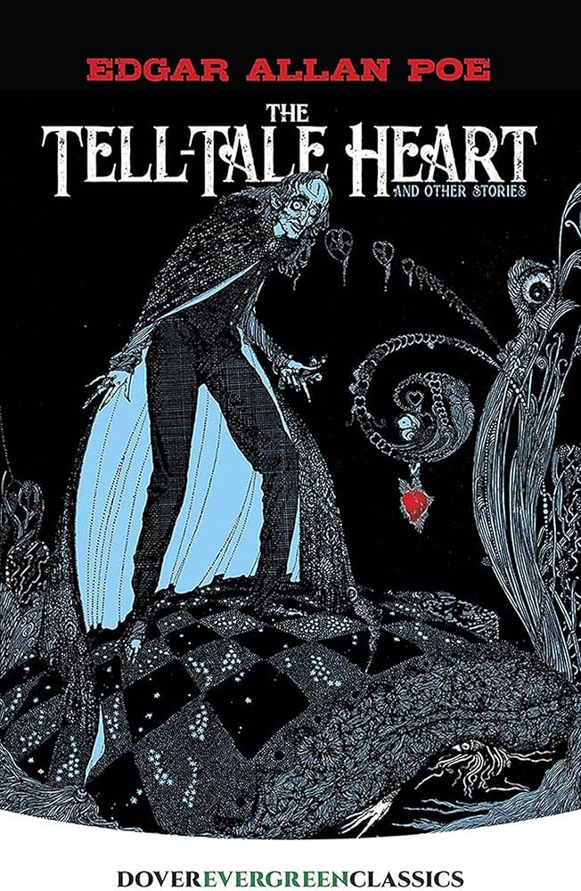

SHERLOCK HOLMES
Rp.175.000
Sherlock Holmes adalah kumpulan novel dan cerita detektif fiksi karya Sir Arthur Conan Doyle. Buku ini menceritakan petualangan Sherlock Holmes, seorang detektif jenius yang terkenal karena kemampuan berpikir logis, observasi tajam, dan penalaran deduktifnya. Ia dibantu oleh sahabat sekaligus penulis kisahnya, Dr. John Watson. Cerita-cerita Sherlock Holmes umumnya berfokus pada pemecahan kasus misteri dan pembunuhan yang rumit di London dan sekitarnya pada akhir abad ke-19. Dengan memperhatikan detail kecil yang sering diabaikan orang lain, Holmes mampu mengungkap kebenaran di balik kasus-kasus tersebut secara cerdas dan mengejutkan. Buku ini memiliki gaya bahasa yang menarik, alur menegangkan, dan penuh teka-teki, sehingga cocok untuk pembaca yang menyukai cerita misteri, kriminal, dan investigasi. Sherlock Holmes juga termasuk karya sastra klasik dunia yang masih populer hingga sekarang.

ALGEBRA MCGRAWHILL
Rp.700.000
Buku Algebra McGraw-Hill adalah buku pelajaran matematika yang membahas konsep-konsep aljabar secara sistematis dan bertahap, mulai dari dasar hingga tingkat lanjutan. Materinya mencakup operasi bilangan, persamaan dan pertidaksamaan, fungsi, grafik, polinomial, hingga persamaan kuadrat. Buku ini dilengkapi dengan penjelasan yang jelas, contoh soal langkah demi langkah, serta latihan soal yang beragam, sehingga membantu siswa memahami konsep dan melatih kemampuan pemecahan masalah.Cocok digunakan sebagai buku pegangan belajar di sekolah maupun belajar mandiri.

THE TELL-TALE HEART
Rp.49.000
The Tell-Tale Heart adalah cerpen karya Edgar Allan Poe yang mengisahkan seorang narator dengan kondisi kejiwaan tidak stabil yang berusaha membuktikan bahwa dirinya tidak gila. Ia terobsesi pada mata seorang lelaki tua yang tinggal bersamanya, hingga akhirnya melakukan pembunuhan. Cerita ini berfokus pada rasa bersalah, ketakutan, dan tekanan batin sang tokoh utama. Ketegangan dibangun melalui sudut pandang orang pertama yang membuat pembaca masuk ke dalam pikiran tokoh. Judul The Tell-Tale Heart merujuk pada suara detak jantung yang menjadi simbol nurani dan kegelisahan.